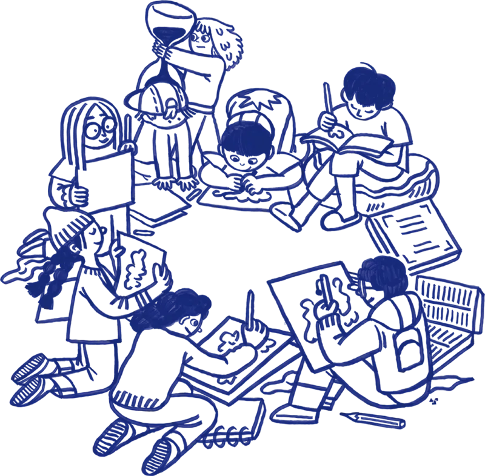

产品使用流程
一键创建并立即分享大厅
只需点击一下即可生成共享房间。将链接分享给画友，无需下载任何软件或注册账号，即可通过浏览器立即加入。
直接筛选与智能随机
在应用内直接搜索并筛选姿势图片。房长决定图集后，系统将自动打乱顺序，且在正式绘制开始前保持隐藏。
精准同步的计时器，专注绘制
每个人在同一时刻绘制相同的姿势。同步的计时器决定了图片的显示时间，并在时间截止时自动隐藏，确保公平且专注的绘制节奏。
专为专注创作而设计
旨在解决传统视频会议中速写聚会带来的各种痛点与不便。
-
拒绝压缩，高清呈现
不同于因视频共享导致画质压缩和延迟的模式，Croquing 直接在每个人的设备上加载原图。清晰分辨细微的解剖细节和肌肉质感。
-
服务器权威计时
防止提前作画。房长在绘制前设定每轮时长（1-60分钟），权威的服务器计时器确保每位画友时刻同步。绘制开始时解锁图片，时间结束时立即隐藏。
-
集成的图片检索
房长可在管理面板内直接检索并挑选精选人体图片，几秒钟内完成配置。系统自动标注原作者版权信息，符合社区规范。
-
公平且难以预测的顺序
为了保持手势速写（Gesture Drawing）的挑战性，图片顺序会彻底随机化。在倒计时归零前，没有人能预知下一位模特或姿势。